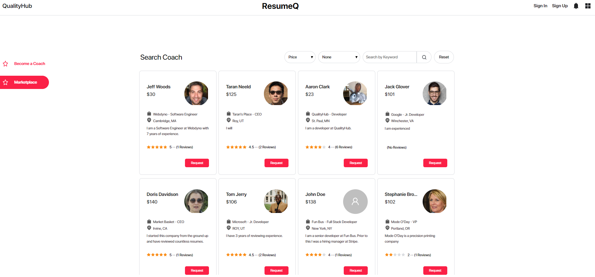

I love to aquire new skill sets, and I especially love helping others learn!
I specialize in web development. My web developing skills include JavaScript, Redux.js, React.js, Node.js, Express, HTML and CSS. I also have experience using Java, C#, and Python.
Recent Work

ResumeQ
View CodeA central platform for quality assessment of resumes. Created with GraphQL, Prisma, Node.js, React.js, and Apollo Client. Made by five remote developers, and built over eight weeks. I worked as a front-end developer using Apollo Client & React.js. I assisted in building resolvers to retrieve data from the back-end and I stored data in state and properties. I built the marketplace, listings, and request components with functionality.

Business Card Organizer
View CodeAn application that allows you to save and share digital business cards. I used HTML and CSS to build the marketing page for this project. The functionality of the application was built by 4 other developers.

Guess Who
View CodeThree other students and I were challenged to work together and put our new skills to the test. Guess Who is a game that fetches presidential candidates from the Twitter API. Given multiple options, the user must guess which candidate posted a specific tweet. In this project, I used React.js, HTML, and CSS to develop many of the front-end components throughout the application.

My Tech Stuff
View CodeI worked with three other people on this project. It is a web application that allows users to lend or borrow tech equipment. I used React.js, HTML, and CSS to develop front-end features such as register/sign in, profile, marketplace, and marketplace CRUD operations.
Get In Touch
Get in contact with me, Taran Neeld, to take care of your web developing needs.